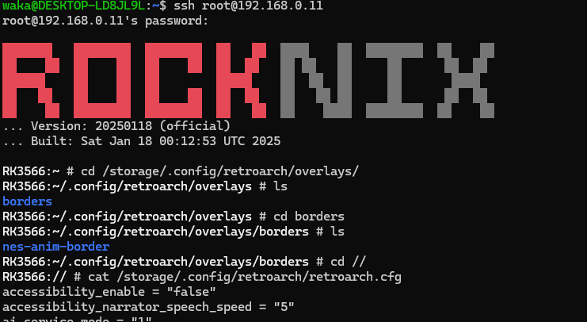
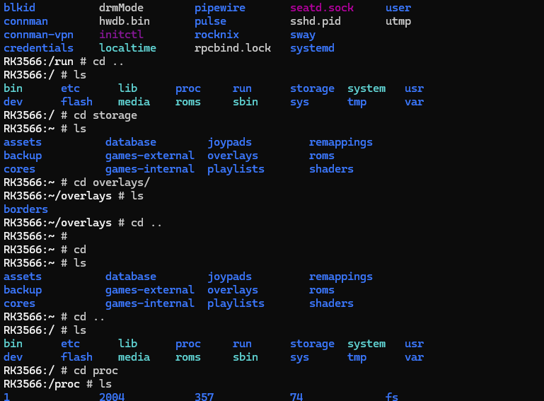
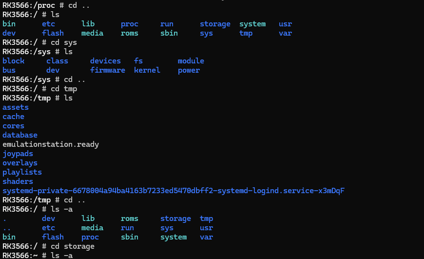
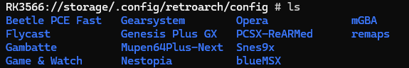

はじめに
はじめに言っておくとこれは失敗しました。
レトロゲームエミュレータは基本的にretroarchというフロントエンドから、Nestopia(NESのエミュレータ)をAPIで呼び出す?形らしいです。
今やりたいのはBezelアートです。RetroArchもとい、RetroArchのクロスプラットフォームAPIであるLibretroを色々ごにょごにょすれば自動的に対応できるのではないかと思ったんです。
というか、RockNixの公式Wikiにはそうしろと書いてあります。
という事で、私のやりたいことをまとめると
● ベゼルアートを自動的に適応させたい!!! という事です。

Libretroの動画の通りやったら?
はい、このLibretroのページの最初にある動画のようにやったらいいじゃん!!
分かってます。その通りです。でも、めんどくさいでしょ
いちいち、RG503の場合は「select + X」を押して、RetroArchを起動して、OSDオーバーレイを選択して、プリセットを選択して、ディレクトリをめぐって目的のベゼルを見つけて、適応して、B連打で戻って、再開を選択して、Aボタンを押して、ゲームに戻る。
クイックメニューからの設定はめんどくさすぎる!!!!
あともう一つ理由があります。なんか、ゲームそれぞれのベゼルアートを自動的に適応できたらかっこよくないですか？それをしたかったんです。
やってみたことその1
取り合えず、本体側の設定からどうにかできないか考えました。
色々探したんですが、オーバーレイに関する設定は0でした。retroarchの設定にしか存在していません。
やってみたことその2
retroarch側の設定にあるんじゃね。そうです、それなんです。
あります。
しかし、機能しません。
実はこのrocknixのretroArchに問題があるのか仕様なのか知りませんが、一度設定してもその設定は吹き飛びます。消えます。すぐに。もう一度ゲームを再起動すると消えてしまいます。
これが厄介な仕様です。
やってみたことその3
はい。本体でできることはこれで終わりです。もう何もできません。
しかし、ここであきらめるわけにはいきません。
RocknixはUnixライクOS、さらに言えば、linuxのディストリビューションの一つという位置づけ!!!
じゃあ、CLIで操作できるはずです!!!
できますよ。もちろん。
それでは、CLIで操作しましょう。方法は簡単です。
SSH接続します。
あいにく目の前にあったのが、windowsなので、WSLからアクセスしましょう。あ、ちなみにWSLも面白い話があって、実はWSLはハイパーバイザーの上で、windowsとほぼ同じような場所で動いているっていう話で....長くなりそうなのでまたの機会にします。
ここにROCKNIXの画像
はい、SSH接続しました。パスワードはそのままrocknixです。rootで入りましょう。
まぁ、とりあえず、RetroArchのconfigファイルを探すと、ありました。/.config/retroarch/retroarchの中にありました!!
ふんふん、なるほどなるほど。言語設定はuser_language = "1"がありましたので、これを0→1にすれば日本語固定になりますね。
これだけでもだいぶと使いやすくなります。
次は、Overlayの設定ですよ。
あんまりないですが、一応ありました。
overlay_directory = "/tmp/overlays"
これをお好きなディレクトリに変更したらいいですね。よしよし。次は自動設定だな....
ないです。
仕方ないのでLibretroのGithubの354行目みたいに適当に書いといたらいいじゃーん。
ダメです。そんな設定ありません。
仕方ないので色々探索していると、//storage/.config/retroarch/config に、以下の画像のようながファイル群を発見しました。
おいおい、これは自分が使ったことのあるエミュレータたちじゃないか...この設定の中にあるのでは....
RK3566://storage/.config/retroarch/config/Nestopia # ls
Nestopia.opt retroarch.cfg
あったぞ、retroarch.cfgとかいうめちゃくちゃ、コアごとの設定っぽいやつが!!!!
少し気がかりなのが、搭載されているエミュレータ全部じゃないよ。なんでだろ。
まぁいいや、とりあえず中身を見ると。
RK3566://storage/.config/retroarch/config/Nestopia # cat retroarch.cfg
input_overlay = "/tmp/overlays/borders/nes-anim-border/nes-border.cfg"
input_overlay_enable = "true"
input_overlay_opacity = "0.900000"
input_overlay_scale = "1.000000"
えっぐい。これですよこれ。input_overlayこれを探してました。
はいはい、これを好きなcfgに書き換えて....できた!!!
完璧や。いやーやっぱり余裕やなlinuxは
と、思っていた時期もありました。
嘘です。余裕じゃないです。きついっすこれ。
何が問題なの
とりあえず、再起動して適応されているか確認しました。適応できていません。縁は黒いままです。(縁って緑って感じに似てるから縁が黒いって緑が黒いって書いてもばれなさそう)
仕方ないです。もう一度SSH接続して中身を見てみたら。
これはなんと、/.config/retroarch/retroarchの中にある、overlay_directoryがもともとのやつに戻ってるではありませんか。これは明らかにオーバーライドされていますよ。なんで?????
もう無理です。その後何度も試してもオーバーライドされてしまいます。
視点を変えよう
こういう時に全然違うところを見ると解決したりします。やってみましょう。
色々やっている画像↓



どうにもなりませんでした
こういう時は助けを求めるべきです。
コミュニティの話
はい。主題です。
助けを求めるにもヤホー知恵袋は性格が悪くて何も教えてくれない人しかいないし(あくまで主観です)
stackOverflowに書き込むような内容じゃない。
Rocknixのディスコードもどこから入るのかわからない。
英語でredditで検索しても同じように困っている人はいない。
おそらく、RG503の元のAnbernic製のOSの自動適応機能は特殊だったのでしょう。仕方ありません。
そこで、そういうコミュニティが欲しいわけです。あわよくば、日本製エミュレータOSを作ってほしいわけです。
え？自分で作れって？無理ですよ。プログラムが大嫌いだし。
こういうことをイジイジするのは好きですが、プログラミングは勘弁。
しかし、実際もっと探求するにはRocknixのgithubのソースコードを改変するしかないのでしょう。
正直、どこにどのコードがあるのか分かればできそうですが、今は基板名刺のデバックに忙しいのでやりません。
本当はいつか実現したいなぁ。screenscraperにもbezelのデータがあって、そこから自動ダウンロード+自動適応できたらすごく見た目も良くなってかっこいいので。
総括
という事で今回は敗北でした。仕方ないね。まぁ、またいつかできたらやります。今は手動で頑張りますよ。